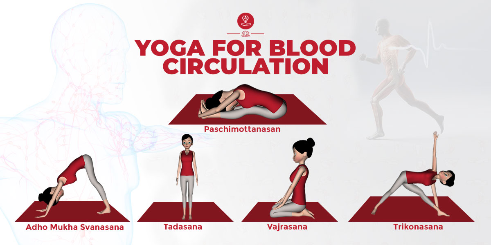

- Improves posture
- Increases flexibility
- Helps in lowering blood sugar
- Increases blood flow
- Keep diseases at bay
- Increases self-esteem
- Improves lung function
- Helps you sleep better !
Working for long hours on a desk could not only hurt your spine but also make you feel tired at the end of the day. Practicing certain yoga asanas could help you in improving your posture nd also prevent pain in your neck and lower back.
When was the last time you wished you could easily touch your toes which bending forward? Well, practicing yoga could help you in that. Yoga can not only help you in increasing your flexibility but also let you perform complex asanas. It can also help improve cognitive function and helps lower the risk of death from all causes.

Yoga not only helps in lowering blood sugar but also lowers bad cholesterol and boosts good cholesterol. It encourages weight loss and improves the body’s sensitivity to insulin.
The relaxation exercises in yoga regulates blood to all parts of your body. Exercises such as handstand, helps venous blood from the lower part of the body to flow back to your heart, where it can be pumped back to the lungs to be oxygenated
Yoga exercises have a beneficial effect on the immune system. It not only helps in destroying various viruses we catch during season change, but also boosts our immunity to fight off diseases.
Practicing yoga would help you explore a different side of yourself. It would make you feel good about yourself and helps you take a positive approach in life.
A lot of breathing exercises are said to improve lung function. Doing such exercises in a long run could cure respiratory problems. It also increases the capacity of your lungs.
Yoga helps in reducing stress and creates a routine which in turn makes a regular sleeping pattern. A relaxed body gets a deeper and more peaceful sleep.